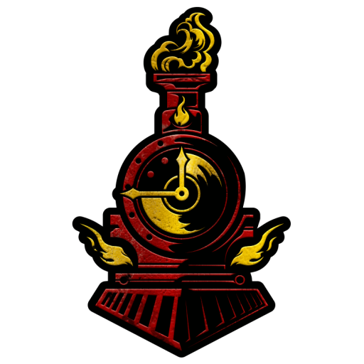
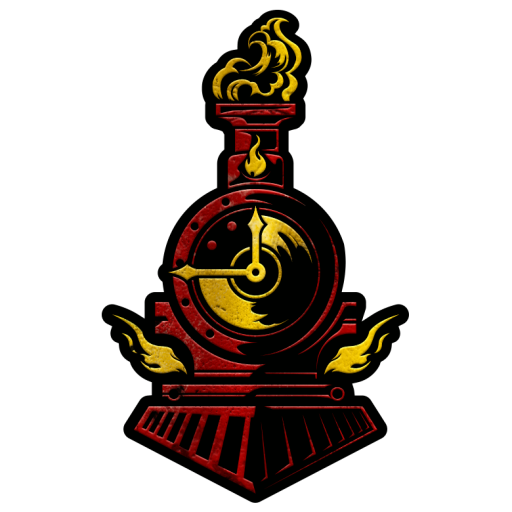

O CAVALEIRO NO CAPITULO 3?!?!?! "Roaring Fraud" de acordo com os internautas. "Gerson sola"!!!
A comunidade de deltarune enlouquece com o Cavaleiro, um personagem que esperavámos aparecer apenas em capitulos futuros como 5 ou 6. Nessa matéria iremos explicar o quão impactante essa luta foi.